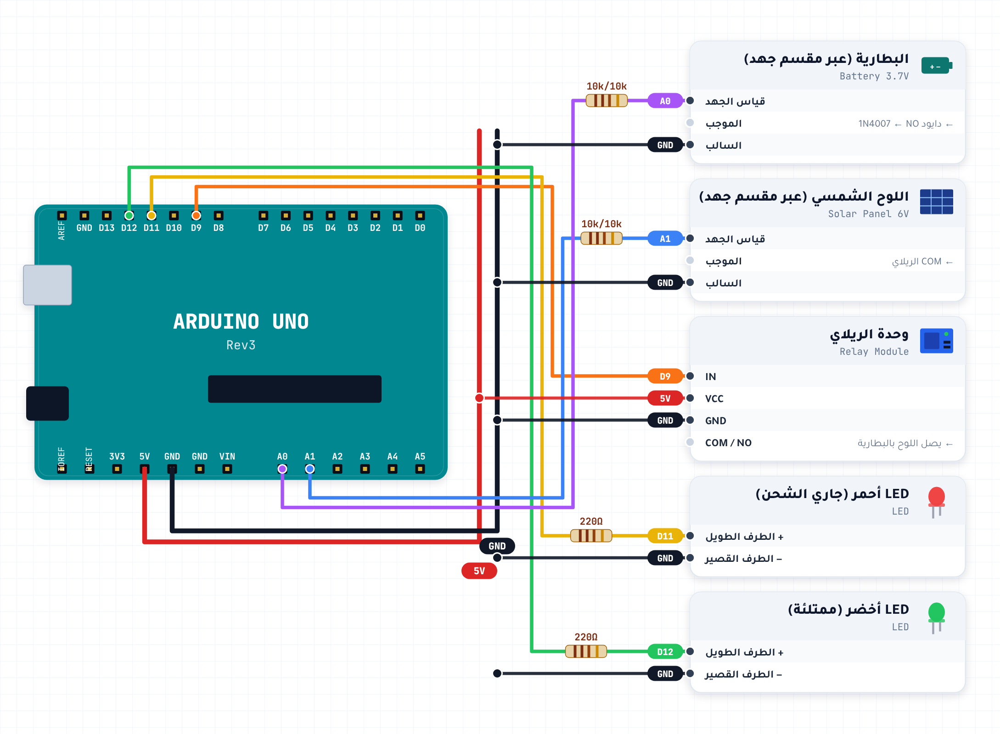

▶فيديو الشرح
يراقب الأردوينو جهد اللوح الشمسي والبطارية، ويشحن عبر الريلاي ثم يوقف الشحن عند الامتلاء.
1المكونات
ARDUINO UNOboardالبطارية (عبر مقسم جهد)Battery 3.7Vاللوح الشمسي (عبر مقسم جهد)Solar Panel 6Vوحدة الريلايRelay ModuleLED أحمر (جاري الشحن)LEDLED أخضر (ممتلئة)LEDأسلاك توصيلJumper Wiresلوحة تجاربBreadboard
2مخطط التوصيل

اضغط على المخطط لتكبيره · نسخة SVG عالية الدقة
| القطعة | الطرف | يوصل إلى |
|---|---|---|
| البطارية (عبر مقسم جهد) | قياس الجهد | A0 عبر مقاومة 10k/10k |
| البطارية (عبر مقسم جهد) | الموجب | دايود 1N4007 NO |
| البطارية (عبر مقسم جهد) | السالب | GND |
| اللوح الشمسي (عبر مقسم جهد) | قياس الجهد | A1 عبر مقاومة 10k/10k |
| اللوح الشمسي (عبر مقسم جهد) | الموجب | COM الريلاي |
| اللوح الشمسي (عبر مقسم جهد) | السالب | GND |
| وحدة الريلاي | IN | D9 |
| وحدة الريلاي | VCC | 5V |
| وحدة الريلاي | GND | GND |
| وحدة الريلاي | COM / NO | يصل اللوح بالبطارية |
| LED أحمر (جاري الشحن) | + الطرف الطويل | D11 عبر مقاومة 220Ω |
| LED أحمر (جاري الشحن) | − الطرف القصير | GND |
| LED أخضر (ممتلئة) | + الطرف الطويل | D12 عبر مقاومة 220Ω |
| LED أخضر (ممتلئة) | − الطرف القصير | GND |
3الكود
لا يحتاج هذا المشروع إلى أي مكتبة إضافية.
/* المشروع 5: نظام شاحن بطارية بالطاقة الشمسية مبسط كتاب: 38 مشروع في شهر — لؤي النصري (@robotlouay) التوصيل: - جهد البطارية ← مقسم جهد (R1=10kΩ, R2=10kΩ) ← A0 - جهد اللوح الشمسي ← مقسم جهد (R1=10kΩ, R2=10kΩ) ← A1 - وحدة الريلاي (IN) ← Pin 9 (تصل اللوح بالبطارية عبر الدايود 1N4007) - LED أحمر (جاري الشحن) ← 220Ω ← Pin 11 - LED أخضر (البطارية ممتلئة) ← 220Ω ← Pin 12 القيم أدناه لبطارية ليثيوم 3.7V (ممتلئة عند 4.2V). عدّلها حسب بطاريتك. تنبيه: مقسم 10k/10k يقسم الجهد على 2، أي أن أقصى جهد مسموح على الدخل = 10V. */ const int BAT_PIN = A0; const int SOLAR_PIN = A1; const int RELAY_PIN = 9; const int RED_LED = 11; const int GREEN_LED = 12; const float DIVIDER_FACTOR = 2.0; // (R1 + R2) / R2 const float BAT_FULL = 4.20; // إيقاف الشحن عند هذا الجهد const float BAT_RESUME = 4.00; // إعادة الشحن عند النزول تحت هذا الجهد const float SOLAR_MIN = 4.50; // أقل جهد للوح لبدء الشحن bool charging = false; float readVoltage(int pin) { long sum = 0; for (int i = 0; i < 10; i++) { sum += analogRead(pin); delay(2); } // متوسط 10 قراءات float v = (sum / 10.0) * (5.0 / 1023.0); return v * DIVIDER_FACTOR; } void setup() { Serial.begin(9600); pinMode(RELAY_PIN, OUTPUT); pinMode(RED_LED, OUTPUT); pinMode(GREEN_LED, OUTPUT); digitalWrite(RELAY_PIN, LOW); } void loop() { float vBat = readVoltage(BAT_PIN); float vSolar = readVoltage(SOLAR_PIN); // منطق الشحن مع هامش (Hysteresis) لتجنب التذبذب if (vBat >= BAT_FULL) charging = false; else if (vBat <= BAT_RESUME && vSolar >= SOLAR_MIN) charging = true; if (vSolar < SOLAR_MIN) charging = false; // لا شمس digitalWrite(RELAY_PIN, charging ? HIGH : LOW); digitalWrite(RED_LED, charging ? HIGH : LOW); digitalWrite(GREEN_LED, (vBat >= BAT_FULL) ? HIGH : LOW); Serial.print("Solar: "); Serial.print(vSolar, 2); Serial.print(" V | Battery: "); Serial.print(vBat, 2); Serial.println(charging ? " V | CHARGING" : " V | IDLE"); delay(1000); }
4كيف يعمل؟
- مقسم الجهد يخفض الجهد ليناسب منفذ A0/A1
- إذا كانت الشمس كافية والبطارية غير ممتلئة → الريلاي يشحن
- عند 4.2V يتوقف الشحن
- الأحمر = جاري الشحن، الأخضر = ممتلئة
⚠ قبل توصيل الكهرباء: راجع كل سلك مع الجدول أعلاه، وتأكد من عدم وجود تماس بين 5V و GND. اختر اللوحة والمنفذ الصحيحين من قائمة Tools في Arduino IDE.